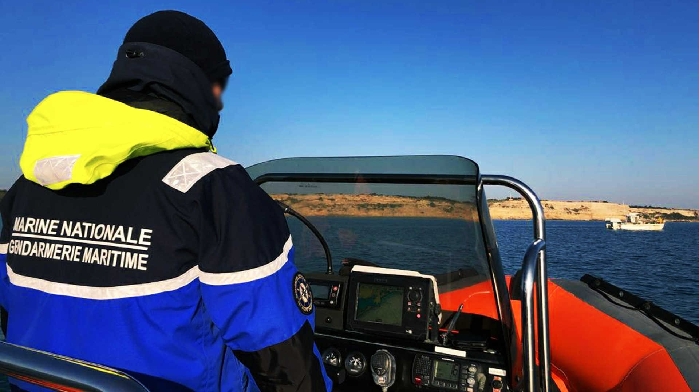

Brigade de surveillance du littoral de Port la nouvelle

Missions :
La brigade de surveillance du littoral a pour responsabilité la : - Police de la navigation (commerce, plaisance, pêche...), - Police des pêches (protection de la ressource halieutique: contrôle des restaurants, poissonneries, criées, navires de pêche...), - Police en mer (contrôle des navires, surveillance en mer...), - La police de l’environnement marin (protection des espaces et espèces protégés, pollutions, activités prohibées en mer...), - La sureté portuaire, - La protection du centre de transmissions de la marine, - La Défense Haute Sensibilité (DFS).
Moyens :
- Mobilité : Véhicules : - 1 4x4 FORD RANGER, - 2 FORD FOCUS. Motocyclettes : - 3 Super Ténéré, - 2 Tout-terrain (TT). Moyens nautiques : - 1 Embarcation type semi-rigide avec moteur 200 Cv HONDA (EFR-NG), - 1 Embarcation a fond plat. - Divers : - Informatique (ordinateurs, logiciels...), - 4 Vélos tout-terrain (VTT).
Effectifs :
- 14 personnels : 10 Sous-officiers, 4 Gendarmes adjoints volontaires. - Police Judiciaire. OPJ : 10 personnels. Certains sous-officiers ont les spécialités/formations suivantes : - Pilotes d’embarcation. - Motocyclistes. - Réseaux nationale d'échouage. - Aide moniteur intervention professionnelle. - Police des pêches. - Police environnement.